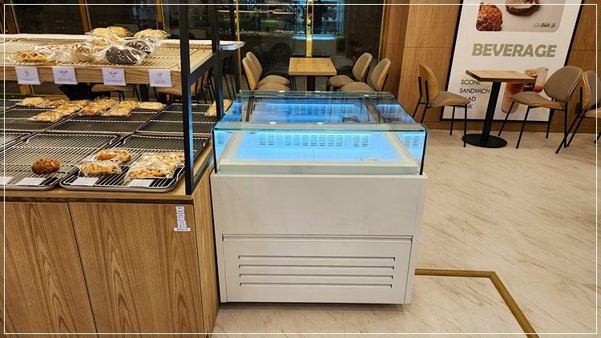
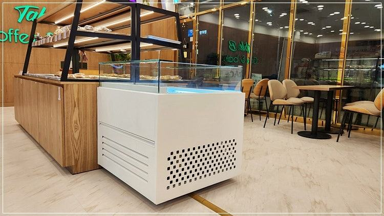
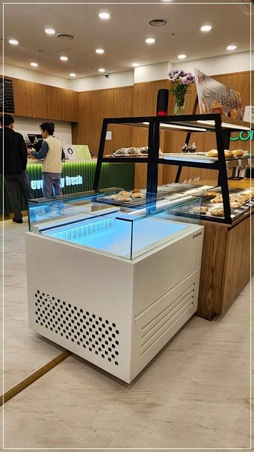
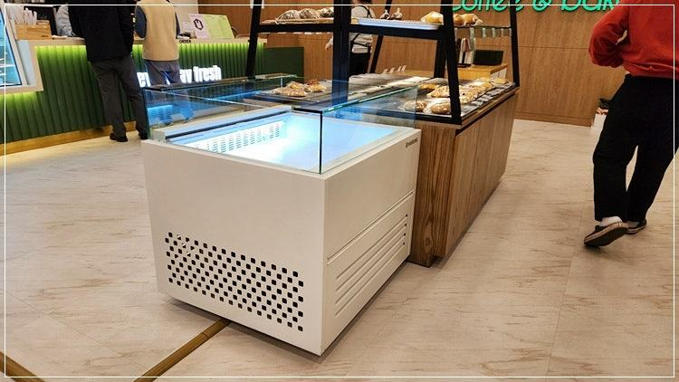
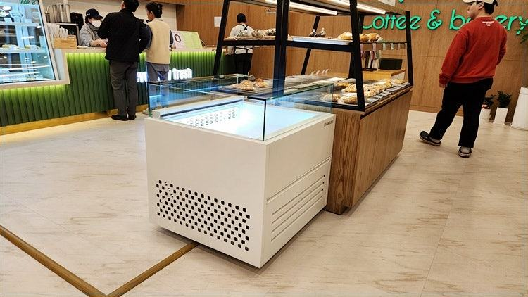
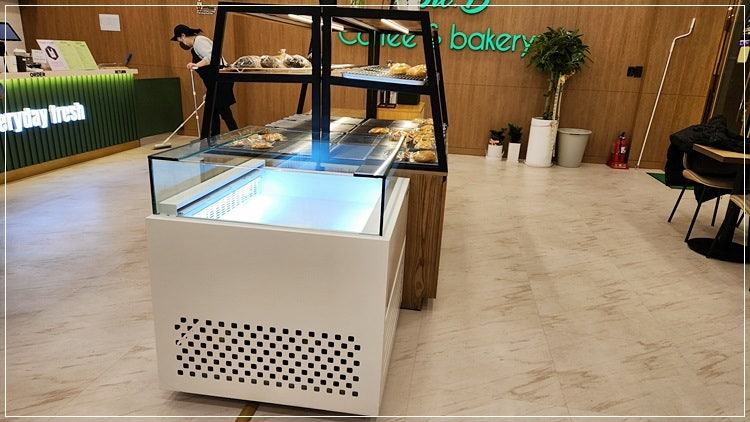
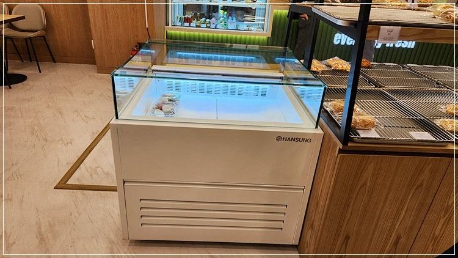
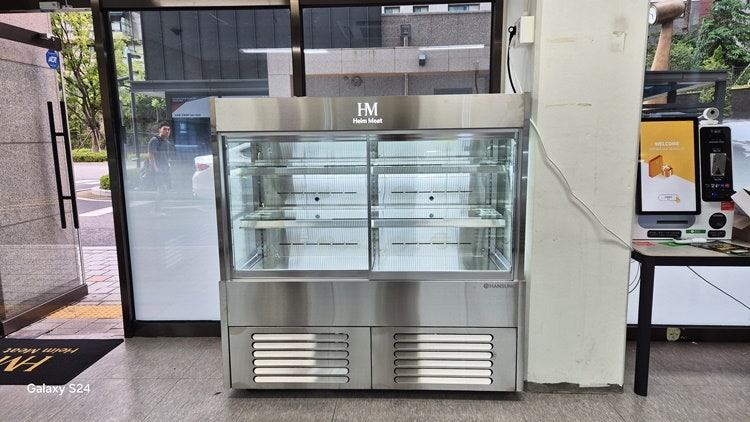
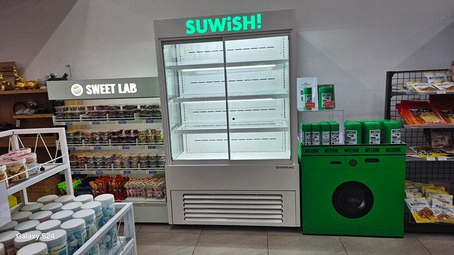

정육쇼케이스
정육쇼케이스 배치, 자리 하나로 달라지는 손님과 작업 동선

정육쇼케이스는 손님이 들어오자마자 고기 색이 보이는 자리에 두되, 뒤쪽에서 손질대와 저울로 바로 이어지는 작업 동선을 먼저 확보해야 합니다. 벽면, 통로 측면, 계산대 근처 중 어디에 둘지는 매장 폭과 대면 판매인지 셀프 판매인지에 따라 정하시면 됩니다.
안녕하세요. 정육점과 식육식당의 쇼케이스를 매장 도면에 맞춰 만드는 한성쇼케이스입니다.
정육점 인테리어를 하다 보면 쇼케이스 위치를 정하는 순간이 가장 오래 걸립니다. "입구 정면에 둘까요, 옆 벽에 붙일까요?" 사장님들이 도면을 펼쳐 놓고 몇 번씩 자리를 옮겨 보시는 이유가 있습니다.
정육쇼케이스는 한 번 설치하면 배관과 전기, 작업대 위치가 함께 고정됩니다. 자리를 잘못 잡으면 손님은 고기를 잘 못 보고, 사장님은 하루 종일 같은 길을 몇 번씩 돌아다니게 됩니다.
오늘은 정육쇼케이스 배치를 정할 때 손님 동선과 작업 동선을 어떻게 함께 볼지, 위치별 장단점과 함께 정리해 드리겠습니다.
1. 손님 동선 먼저, 시선이 닿는 각도
정육점은 손님이 문을 열고 들어오는 순간 고기 색으로 첫인상이 정해집니다. 출입구에서 정면이나 약간 비스듬히 보이는 자리에 쇼케이스를 두면 진열된 부위가 바로 눈에 들어옵니다.
반대로 입구 옆 벽에 나란히 붙이면 들어와서 고개를 돌려야 보이니 안내가 따로 필요해집니다.
조명도 배치와 함께 봐야 합니다. 쇼케이스 위로 매장 천장 조명이 바로 떨어지면 유리에 반사가 생겨 고기가 잘 안 보입니다.
쇼케이스 내부 조명이 고기를 비추고, 바깥 조명은 반사가 덜한 위치에 오도록 맞춰 보세요.
2. 작업 동선, 뒤쪽이 더 중요합니다
대면 판매 정육점이라면 쇼케이스 뒤쪽이 사장님의 작업 공간입니다. 숙성고나 냉장실에서 고기를 꺼내 손질대에서 다듬고, 쇼케이스에 채우고, 주문이 들어오면 꺼내 저울에 올려 포장하는 흐름이 한 줄로 이어져야 합니다.
쇼케이스 뒤 통로가 좁으면 문을 열 때마다 몸을 비켜야 하고, 두 사람이 일하면 서로 부딪힙니다. 뒷문 개방 방향과 손질대 위치를 같이 정해 두시면 영업 중 동선이 훨씬 짧아집니다.
- 냉장실 → 손질대 → 쇼케이스 → 저울 순서를 도면에 그려 보세요.
- 쇼케이스 뒷문이 열렸을 때 통로가 남는지 확인하세요.
- 저울과 포장대는 쇼케이스 끝단 가까이 두세요.


3. 벽면·통로 측면·계산대 근처, 위치별 차이
벽면 배치는 통로를 침범하지 않아 좁은 매장에 맞고, 한쪽 벽을 고기 진열면으로 정리하기 좋습니다. 대신 입구에서 바로 보이지 않을 수 있습니다.
통로 측면 배치는 손님과 닿는 면이 넓어 둘러보며 고르기 좋지만, 통로 폭이 줄어드니 문 열림 방향과 선반 깊이를 같이 따져야 합니다.
계산대 근처 배치는 양념육이나 소포장처럼 마지막에 하나 더 집는 상품에 어울리지만, 직원 이동 구역과 겹치면 바쁜 시간에 병목이 됩니다.
무인 정육점이라면 손님이 직접 문을 여는 셀프 구조라 통로 측면에 길게 두고, 손님이 머무는 자리 앞에 여유 공간을 남겨 두는 편이 좋습니다.
4. 설비 조건도 배치를 좌우합니다
쇼케이스 뒷면과 옆면에 열이 빠질 공간이 있어야 냉각이 무리하지 않습니다. 벽에 완전히 붙이거나 다른 장비와 맞붙이면 여름에 고기 온도가 흔들리기 쉽습니다.
전원과 배수 위치도 미리 정해 두어야 나중에 바닥을 다시 뜯는 일이 없습니다.
출입문 폭과 반입 경로도 확인하세요. 길게 맞춘 쇼케이스는 분리 제작이 필요한 경우가 있어, 배치를 정할 때 함께 말씀해 주시면 좋습니다.
체크리스트
- 출입구에서 쇼케이스가 보이는 각도
- 냉장실·손질대·저울로 이어지는 작업 순서
- 뒷문 개방 시 남는 통로 폭
- 천장 조명 반사 여부
- 뒷면 열 배출 공간과 전원·배수 위치
- 출입문 폭과 반입 경로
손님 동선에 맞춰 설계한 샌드위치쇼케이스 사례
정육 매장은 아니지만, 배치를 정할 때 어떤 순서로 생각하는지 보여 드리기 좋은 현장입니다. 카페에서 샌드위치 판매를 늘리시면서 쇼케이스를 새로 맞춘 경우로, 매장을 이용하는 손님 동선에 맞춰 상품이 가장 신선해 보이는 위치와 각도를 먼저 정했습니다.
위에서 내려다봐도 샌드위치를 한 번에 고를 수 있도록 투명하게 제작했고, 매장 인테리어와도 어울리게 설계했습니다.
납품 당일 사장님께서 동선과 분위기가 기대 이상이라고 말씀해 주셨는데, 정육쇼케이스도 같은 방식으로 손님 시선과 작업 동선을 먼저 그린 뒤 크기와 문 방향을 정합니다.









자주 묻는 질문
매장이 좁은데 정육쇼케이스를 입구 정면에 둬도 될까요?
입구 정면은 눈에 잘 띄지만 손님이 들어와 머물 공간이 줄어들 수 있습니다. 좁은 매장이라면 벽면에 붙이고 입구 쪽 끝단에 인기 부위를 진열하는 방법도 있습니다.
쇼케이스 길이를 매장 벽에 딱 맞춰 만들 수 있나요?
가능합니다. 실측 치수에 맞춰 길이와 깊이, 내부 단차까지 조정해 제작하며, 열 배출을 위한 여유 공간도 함께 계산해 드립니다.
배치 상담은 어떻게 받나요?
매장 도면이나 사진, 냉장실과 손질대 위치를 보내 주시면 됩니다. 국내 최초로 쇼케이스 전문 디자이너가 상주하고 있어 도면을 보며 배치를 함께 잡아 드립니다.
매장 조건에 맞춰 만드는 한성쇼케이스
원하시는 제품 사진과 설치할 공간 사진만 보내 주셔도 매장에 맞는 구성을 추천해 드립니다.
- 전국 240여 개 A/S 전담 센터 운영
- 본사 대량 자재 매입으로 품질 대비 합리적인 가격
- 유럽제·삼성 냉각 콤프레셔 적용
- 국내 최초 쇼케이스 전문 디자이너 상주
매장 폭과 원하는 진열 구성을 알려 주세요. 실측과 견적을 안내해 드립니다.
031-986-2458